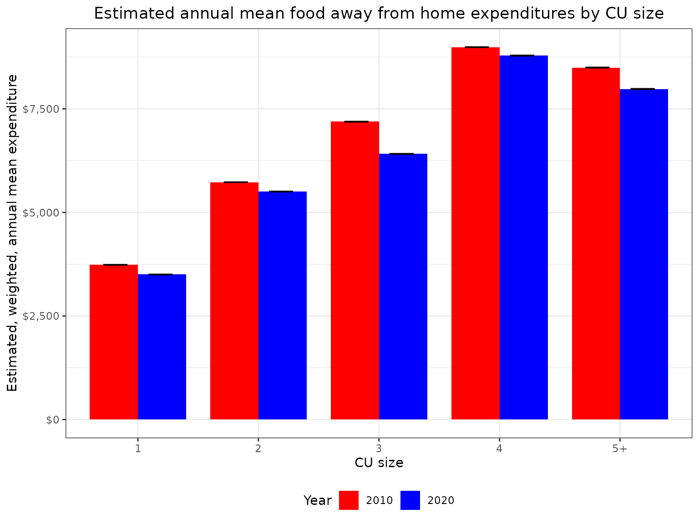

Calcluating Inflation-Adjusted CE Estimates
Source:vignettes/articles/inflation-adjusted-estimates.Rmd
inflation-adjusted-estimates.RmdIntroduction
In this example I’m going to compare mean annual expenditures on food away from home between 2010 and 2020 by household size and I want to convert expenditures to 2023 dollars using the CPI.
I’ll need the following data and metadata sources:
- Interview survey data zip files for 2010, 2019, and 2020
- Diary survey data zip files for 2010 and 2020
- Hierarchical grouping zip files
- CE Data Dictionary
Data gathering
Data files can be downloaded from the CE PUMD Data Files page (it’s easiest to use CSV) and hierarchical grouping files can be downloaded from the CE PUMD Documentation page
To get the files I’ll first create a temporary directory and download
all of the files that I need from the BLS website into this directory.
You might choose to store your files differently, but this convention
will keep the files organized, it will keep the code simple, and
everything will be in a folder that will be easy to clean up after.
Since the BLS blocks third party applications I’ll add a user-agent to
identify myself in the download function that is stored in a variable
called cepumd_ua (not shown).
ce_data_dir <- tempdir()
download.file(
"https://www.bls.gov/cex/pumd/data/comma/intrvw19.zip",
fs::path(ce_data_dir, "intrvw19.zip"),
mode = "wb",
headers = list(
"User-Agent" = cepumd_ua
)
)
download.file(
"https://www.bls.gov/cex/pumd/data/comma/intrvw20.zip",
fs::path(ce_data_dir, "intrvw20.zip"),
mode = "wb",
headers = list(
"User-Agent" = cepumd_ua
)
)
download.file(
"https://www.bls.gov/cex/pumd/data/comma/intrvw10.zip",
fs::path(ce_data_dir, "intrvw10.zip"),
mode = "wb",
headers = list(
"User-Agent" = cepumd_ua
)
)
download.file(
"https://www.bls.gov/cex/pumd/data/comma/diary20.zip",
fs::path(ce_data_dir, "diary20.zip"),
mode = "wb",
headers = list(
"User-Agent" = cepumd_ua
)
)
download.file(
"https://www.bls.gov/cex/pumd/data/comma/diary10.zip",
fs::path(ce_data_dir, "diary10.zip"),
mode = "wb",
headers = list(
"User-Agent" = cepumd_ua
)
)
download.file(
"https://www.bls.gov/cex/pumd/stubs.zip",
fs::path(ce_data_dir, "stubs.zip"),
mode = "wb",
headers = list(
"User-Agent" = cepumd_ua
)
)
download.file(
"https://www.bls.gov/cex/pumd/ce-pumd-interview-diary-dictionary.xlsx",
fs::path(ce_data_dir, "ce-data-dict.xlsx"),
mode = "wb",
headers = list(
"User-Agent" = cepumd_ua
)
)Identifying expenditure categories
First I’ll load the hierarchical grouping files for both years.
integ10_hg <- ce_hg(
2010,
integrated,
hg_zip_path = file.path(ce_data_dir, "stubs.zip")
)
integ20_hg <- ce_hg(
2020,
integrated,
hg_zip_path = file.path(ce_data_dir, "stubs.zip")
)Now I’ll filter rows that have “food away” in the title for 2010.
integ10_hg |>
filter(str_detect(str_to_lower(title), "food away")) |>
gt()| level | title | ucc | survey | factor |
|---|---|---|---|---|
| 3 | Food away from home | FOODAWAY | G | 1 |
And the same for 2020.
integ20_hg |>
filter(str_detect(str_to_lower(title), "food away")) |>
gt()| level | title | ucc | survey | factor |
|---|---|---|---|---|
| 3 | Food away from home | FOODAW | G | 1 |
The title is the same in both years (“Food away from home”). I’ll use
that to get the UCCs for both years. But first, I’ll show the UCCs that
make up the “Food away from home” expenditure category in 2010 using
setting the ucc_only argument in ce_uccs() to
FALSE.
| level | title | ucc | survey | factor |
|---|---|---|---|---|
| 3 | Food away from home | FOODAWAY | G | 1 |
| 4 | Meals at restaurants, carry outs and other | RESTCOAO | G | 1 |
| 5 | Lunch | LUNCH | G | 1 |
| 6 | Lunch at fast food, take-out, delivery, concession | 190111 | D | 1 |
| 6 | stands, buffet and cafeteria (other than employer | 190111 | D | 1 |
| 6 | and school cafeteria) | 190111 | D | 1 |
| 6 | Lunch at full service restaurants | 190112 | D | 1 |
| 6 | Lunch at vending machines and mobile vendors | 190113 | D | 1 |
| 6 | Lunch at employer and school cafeterias | 190114 | D | 1 |
| 5 | Dinner | DINNER | G | 1 |
| 6 | Dinner at fast food, take-out, delivery, concession | 190211 | D | 1 |
| 6 | stands, buffet and cafeteria (other than employer | 190211 | D | 1 |
| 6 | and school cafeteria) | 190211 | D | 1 |
| 6 | Dinner at full service restaurants | 190212 | D | 1 |
| 6 | Dinner at vending machines and mobile vendors | 190213 | D | 1 |
| 6 | Dinner at employer and school cafeterias | 190214 | D | 1 |
| 5 | Snacks and nonalcoholic beverages | SNKNABEV | G | 1 |
| 6 | Snacks and nonalcoholic beverages at fast food, | 190311 | D | 1 |
| 6 | take-out, delivery, concession stands, buffet and | 190311 | D | 1 |
| 6 | cafeteria (other than employer and school | 190311 | D | 1 |
| 6 | cafeteria) | 190311 | D | 1 |
| 6 | Snacks and nonalcoholic beverages at full service | 190312 | D | 1 |
| 6 | restaurants | 190312 | D | 1 |
| 6 | Snacks and nonalcoholic beverages at vending | 190313 | D | 1 |
| 6 | machines and mobile vendors | 190313 | D | 1 |
| 6 | Snacks and nonalcoholic beverages at employer and | 190314 | D | 1 |
| 6 | school cafeterias | 190314 | D | 1 |
| 5 | Breakfast and brunch | BRKFBRUN | G | 1 |
| 6 | Breakfast and brunch at fast food, take-out, | 190321 | D | 1 |
| 6 | delivery, concession stands, buffet and cafeteria | 190321 | D | 1 |
| 6 | (other than employer and school cafeteria) | 190321 | D | 1 |
| 6 | Breakfast and brunch at full service restaurants | 190322 | D | 1 |
| 6 | Breakfast and brunch at vending machines and mobile | 190323 | D | 1 |
| 6 | vendors | 190323 | D | 1 |
| 6 | Breakfast and brunch at employer and school | 190324 | D | 1 |
| 6 | cafeterias | 190324 | D | 1 |
| 4 | Food or board at school | 190901 | I | 1 |
| 4 | Catered affairs | 190902 | I | 1 |
| 4 | Food on out-of-town trips | 190903 | I | 1 |
| 4 | School lunches | 790430 | I | 1 |
| 4 | Meals as pay | 800700 | I | 1 |
Next I’ll store the UCC’s for each year as vectors to use in downstream operations.
Identifying and exploring the grouping variable
With the UCCs secured, now I’ll turn to finding the variable for
household size in the CE data dictionary, which can also be downloaded
from the CE PUMD
Documentation page. It’s important to remember that the dictionary
is stored as an “XLSX” workbook that has three worksheets named “Cover”,
“Variables”, “Codes” (yes, the sheet name “Codes” has a space on the
end). I’ll use functions from the readxl package to work
with the dictionary.
I’ll first read in the “Variables” sheet and filter for any rows corresponding to the FMLI file that have “number of members” in the variable description. I also want to filter the variable data to only the FMLI where the “Last year” column is missing, i.e., the variable definition is still in use.
ce_variables <- read_excel(
file.path(ce_data_dir, "ce-data-dict.xlsx"),
sheet = "Variables"
)
#> Warning: Expecting logical in N1014 / R1014C14: got 'Variable was replaced with
#> FINATXEM. FINATXEM calculates after tax income using estimated tax data.'
#> Warning: Expecting logical in N2139 / R2139C14: got 'Data collected only in
#> final interview'
#> Warning: Expecting logical in N2140 / R2140C14: got 'Data collected only in
#> fifth interview'
#> Warning: Expecting logical in N2141 / R2141C14: got 'Data collected only in
#> fifth interview'
#> Warning: Expecting logical in N2142 / R2142C14: got 'Data collected only in
#> final interview'
ce_variables |>
filter(
str_detect(File, "FMLI"),
str_detect(
tolower(`Variable description`), "number of members"
)
) |>
gt()| Survey | File | Variable Name | Variable description | Formula | Flag name | Section number | Section description | Section part | First year | First Quarter | Last quarter | Last year | Comment |
|---|---|---|---|---|---|---|---|---|---|---|---|---|---|
| INTERVIEW | FMLI | AS_COMP5 | Number of members under age 2 in CU | COUNT (AGE < 2) | AS_C_MP5 | NA | CU characteristics, income, weights, and summary level expenditures. | NA | 1984 | 1 | NA | NA | NA |
| INTERVIEW | FMLI | AS_COMP5 | Number of members under age 2 in CU | NA | AS_C_MP5 | NA | CU characteristics, income, weights, and summary level expenditures. | NA | 1980 | 1 | 4 | 1981 | NA |
| INTERVIEW | FMLI | FAM_SIZE | Number of Members in CU | NA | FAM__IZE | NA | CU characteristics, income, weights, and summary level expenditures. | NA | 1984 | 1 | NA | NA | NA |
| INTERVIEW | FMLI | FAM_SIZE | Number of Members in CU | NA | FAM__IZE | NA | CU characteristics, income, weights, and summary level expenditures. | NA | 1980 | 1 | 4 | 1981 | NA |
It looks like FAM_SIZE (from the “Variable Name” column) is the variable I want. I can see that this variable was used from 1980 through 1981 then was dropped and re-introduced in 1984 and has been in use since. So it looks like it’s available for my 2 years of interest. Next I’ll check whether the FAM_SIZE variable has any value codes associated with it. I’ll have to pull in the “Codes” sheet.
ce_codes <- read_excel(
file.path(ce_data_dir, "ce-data-dict.xlsx"),
sheet = "Codes "
)
ce_codes |>
filter(File %in% "FMLI", Variable %in% "FAM_SIZE") |>
gt()| Survey | File | Variable | Code value | Code description | First year | First quarter | Last year | Last quarter | Comment | ...11 |
|---|
Preparing CE data
Since there are no observations in the “Codes” sheet (empty table above), it looks like FAM_SIZE is not a coded variable, so it must be numeric. With all that, I’m ready to prepare my data. I’ll start by preparing the 2010 data and viewing a snippet of the FAM_SIZE variable.
food_away_data_10 <- ce_prepdata(
2010,
integrated,
integ10_hg,
food_away_uccs_10,
dia_zp = file.path(ce_data_dir, "diary10.zip"),
int_zp = file.path(ce_data_dir, "intrvw10.zip"),
fam_size
)
str(food_away_data_10$fam_size)
#> chr [1:77880] "2" "2" "2" "3" "2" "1" "2" "1" "2" "1" "1" "2" "1" "2" "3" ...It’s stored as a character (default behavior of
prepdata()), but the data are, in fact, numbers. Now I’ll
take a look at the distribution by converting the vector to a numeric
vector.
summary(as.numeric(food_away_data_10$fam_size))
#> Min. 1st Qu. Median Mean 3rd Qu. Max.
#> 1.000 1.000 2.000 2.667 4.000 14.000Some households have as many as 14 people which would make for more
categories than I’d like, so I’ll create a FAM_SIZE label with any
number greater than 4 taking on the value “5+” (remembering, of course,
that all grouping variables are read in as character types, so I’ll have
to use as.numeric()). Next, I’ll prepare the 2020 data and row bind it
with the 2010 data as well as create the “fam_size_label” variable. I’m
also going to convert “ref_mo” and “ref_yr” to character to make it
compatible with the CPI data that I’ll get later. Here’s a look at just
a snippet of the data. Please take note that ce_prepdata()
does not add the year to the data set.
Note that the code to prepare the 2020 data calls two Interview zip files. This is because the Interview is a recall survey and the file from the last quarter of the previous year is required to calculate a weighted, estimated mean. In previous years the files were all stored together, but the CE changed how it organizes files in 2020. For more information, please review the Interview Survey file conventions section of the “Getting Started Guide”
food_away_data_20 <- ce_prepdata(
2020,
integrated,
integ10_hg,
food_away_uccs_20,
dia_zp = file.path(ce_data_dir, "diary20.zip"),
int_zp = c(
file.path(ce_data_dir, "intrvw19.zip"),
file.path(ce_data_dir, "intrvw20.zip")
),
fam_size
)
food_away_comp_data <- food_away_data_10 |>
mutate(year = "2010") |>
bind_rows(food_away_data_20 |> mutate(year = "2020")) |>
mutate(
fam_size_label = if_else(
as.numeric(fam_size) > 4,
"5+",
fam_size
),
ref_yr = as.character(ref_yr)
)
food_away_comp_data |>
select(survey, year, newid, finlwt21, cost, ucc, ref_yr, ref_mo) |>
filter(!is.na(ucc)) |>
group_by(year, survey) |>
slice_sample(n = 3) |>
ungroup() |>
gt()| survey | year | newid | finlwt21 | cost | ucc | ref_yr | ref_mo |
|---|---|---|---|---|---|---|---|
| D | 2010 | 01111642 | 39714.374 | 1837.2900 | 190321 | 2010 | 7 |
| D | 2010 | 01127052 | 34424.219 | 156.0000 | 190321 | 2010 | 9 |
| D | 2010 | 01092002 | 26224.838 | 720.2393 | 190322 | 2010 | 5 |
| I | 2010 | 02298292 | 14825.552 | 20.0000 | 190903 | 2010 | 5 |
| I | 2010 | 02267594 | 16470.734 | 139.0000 | 190903 | 2010 | 8 |
| I | 2010 | 02350812 | 20552.362 | 24.0000 | 190903 | 2010 | 12 |
| D | 2020 | 04441501 | 11723.526 | 260.0000 | 190311 | 2020 | 2 |
| D | 2020 | 04640111 | 28023.061 | 1040.0000 | 190311 | 2020 | 10 |
| D | 2020 | 04441042 | 23484.530 | 2974.5300 | 190212 | 2020 | 2 |
| I | 2020 | 04469673 | 16389.345 | 65.0000 | 790430 | 2020 | 11 |
| I | 2020 | 04274323 | 4035.924 | 200.0000 | 190903 | 2020 | 1 |
| I | 2020 | 04220884 | 46728.706 | 300.0000 | 190901 | 2020 | 2 |
Preparing CPI data
Now that the CE PUMD are ready, I’ll turn to getting CPI data for the years in the analysis and for 2023 to set December 2023 as a base using the blsR package. I’ll use the “All Urban Consumers (Current Series)” series, which has series ID “CUUR0000SA0”.
Below is a snapshot of the CPI data.
cpi_data <- blsR::get_series(
"CUUR0000SA0",
start_year = 2010,
end_year = 2023
) |>
pluck("data") |>
map(
\(x) list_flatten(x) |>
enframe() |>
filter(!name %in% "footnotes") |>
unnest(value) |>
pivot_wider(values_from = value, names_from = name)
) |>
list_rbind() |>
rename(cpi = "value") |>
mutate(month = match(periodName, month.name))
#> Year 2010 to 2023 is longer than 10 year API limit. Performing 2 requests.
cpi_base <- cpi_data |> filter(year %in% "2023", month %in% "12")
cpi_data <- cpi_data |> filter(year %in% unique(food_away_comp_data$ref_yr))
cpi_data |> slice(1:10) |> gt()| year | period | periodName | cpi | month |
|---|---|---|---|---|
| 2020 | M12 | December | 260.474 | 12 |
| 2020 | M11 | November | 260.229 | 11 |
| 2020 | M10 | October | 260.388 | 10 |
| 2020 | M09 | September | 260.280 | 9 |
| 2020 | M08 | August | 259.918 | 8 |
| 2020 | M07 | July | 259.101 | 7 |
| 2020 | M06 | June | 257.797 | 6 |
| 2020 | M05 | May | 256.394 | 5 |
| 2020 | M04 | April | 256.389 | 4 |
| 2020 | M03 | March | 258.115 | 3 |
Below is the data for the base month.
gt(cpi_base)| year | period | periodName | cpi | month |
|---|---|---|---|---|
| 2023 | M12 | December | 306.746 | 12 |
Merging CE and CPI data
Next I’m going to join the CPI data to the CE data and adjust the “cost” variable for inflation. Note that I replace resulting missing values in the “cost” variable with “0”. Missing values will result when I multiply a cost of “0” by an adjustment factor and ce_mean() will not function with missing values.
food_away_comp_data <- food_away_comp_data |>
left_join(
select(cpi_data, year, month, cpi),
by = c("ref_yr" = "year", "ref_mo" = "month")
) |>
mutate(
base_cpi = pull(cpi_base, cpi),
across(c(base_cpi, cpi), as.numeric),
cost = cost * (base_cpi / cpi) |> replace_na(0)
)
food_away_comp_data |>
select(survey, year, newid, finlwt21, cost, ucc, ref_yr, ref_mo) |>
filter(!is.na(ucc)) |>
group_by(year, survey) |>
slice_sample(n = 3) |>
ungroup() |>
gt()| survey | year | newid | finlwt21 | cost | ucc | ref_yr | ref_mo |
|---|---|---|---|---|---|---|---|
| D | 2010 | 01147932 | 7894.494 | 756.15778 | 190111 | 2010 | 11 |
| D | 2010 | 01089342 | 41639.740 | 329.31234 | 190313 | 2010 | 6 |
| D | 2010 | 01100482 | 25231.918 | 793.10945 | 190311 | 2010 | 7 |
| I | 2010 | 02288402 | 16073.694 | 60.98377 | 790430 | 2010 | 6 |
| I | 2010 | 02235704 | 10774.380 | 87.23529 | 790430 | 2010 | 7 |
| I | 2010 | 02211073 | 20748.874 | 141.56179 | 190903 | 2010 | 1 |
| D | 2020 | 04365941 | 38302.882 | 1623.08279 | 190111 | 2020 | 1 |
| D | 2020 | 04435492 | 17277.279 | 384.15882 | 190212 | 2020 | 2 |
| D | 2020 | 04675272 | 159354.481 | 1171.16832 | 190111 | 2020 | 12 |
| I | 2020 | 04217844 | 18058.313 | 59.45358 | 190903 | 2020 | 1 |
| I | 2020 | 04343291 | 28754.112 | 106.72396 | 190903 | 2020 | 2 |
| I | 2020 | 04388891 | 33838.749 | 71.14931 | 790430 | 2020 | 2 |
Calculate CE weighted mean estimate by household size
The final step is to calculate means, for which I’ll use some more Tidyverse functions.
food_away_means <- food_away_comp_data |>
group_nest(year, fam_size_label, .key = "data") |>
mutate(ce_mn_df = map(data, ce_mean)) |>
select(-data) |>
unnest(ce_mn_df) |>
mutate(lower = mean_exp - cv, upper = mean_exp + cv)
gt(food_away_means)| year | fam_size_label | agg_exp | mean_exp | se | cv | lower | upper |
|---|---|---|---|---|---|---|---|
| 2010 | 1 | 130764885443 | 3736.098 | 145.8490 | 3.903778 | 3732.194 | 3740.002 |
| 2010 | 2 | 226943690948 | 5730.236 | 161.3868 | 2.816408 | 5727.419 | 5733.052 |
| 2010 | 3 | 126230975407 | 7191.142 | 356.6084 | 4.958996 | 7186.183 | 7196.101 |
| 2010 | 4 | 140899691040 | 8990.195 | 405.0893 | 4.505901 | 8985.690 | 8994.701 |
| 2010 | 5+ | 110959256852 | 8497.039 | 541.8115 | 6.376474 | 8490.663 | 8503.416 |
| 2020 | 1 | 137327788243 | 3501.663 | 177.0925 | 5.057383 | 3496.606 | 3506.720 |
| 2020 | 2 | 239272323027 | 5504.333 | 251.4419 | 4.568072 | 5499.765 | 5508.901 |
| 2020 | 3 | 123823857180 | 6411.851 | 439.8623 | 6.860145 | 6404.990 | 6418.711 |
| 2020 | 4 | 143720599942 | 8785.401 | 599.2455 | 6.820923 | 8778.580 | 8792.222 |
| 2020 | 5+ | 103981299154 | 7978.497 | 672.7888 | 8.432526 | 7970.065 | 7986.930 |
Plotting these data would be pretty straightforward, as well.
food_away_means |>
ggplot(aes(x = fam_size_label, y = mean_exp, fill = year, group = year)) +
geom_bar(stat = "identity", position = "dodge", width = 0.8) +
geom_errorbar(
aes(ymin = lower, ymax = upper),
width = 0.4,
position = position_dodge(0.75)
) +
scale_fill_manual(values = c("red", "blue")) +
scale_y_continuous(labels = scales::dollar) +
labs(
title =
"Estimated annual mean food away from home expenditures by CU size",
x = "CU size",
y = "Estimated, weighted, annual mean expenditure",
fill = "Year"
) +
theme_bw() +
theme(plot.title = element_text(hjust = 0.5), legend.position = "bottom")
Here we can see that on an inflation-adjusted basis, households of all sizes had higher expenditures on food away from home in 2010 than they did in 2020.
Finally, now that the analysis is done, I’ll delete the temporary directory that contains all the CE data.
unlink(ce_data_dir, recursive = TRUE, force = TRUE)